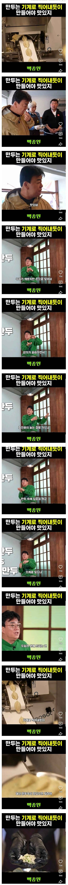
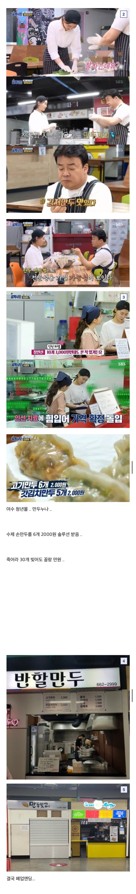

만두누나 어리둥절


만두누나 어리둥절
틀린말은 아니긴한데 그건 그냥 장비를 살 수 있는 자본이 있어야 하잖아
어느 순간부터 저 안경을 쓰던데,,,뭘 노린걸까
홍콩반점 짜장면 500원에 팔아라
저 여자도 저거때문에 욕 존나 먹음ㅋㅋ 무슨 인선이였나?
요즘 7개에 5천원 하던데
손만두 하고 단가 올려받으면 그만인데 수천만원짜리 기계는 누가 대여해주고 공급해주냐...
6천원은 했어야함 시바 보니까 마실것도 싸구만